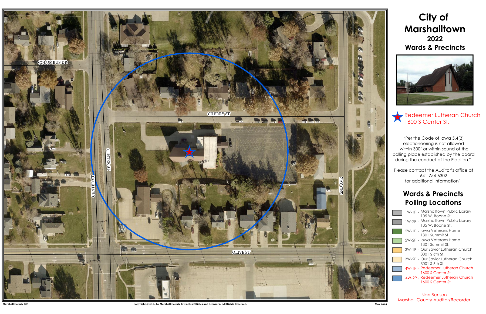
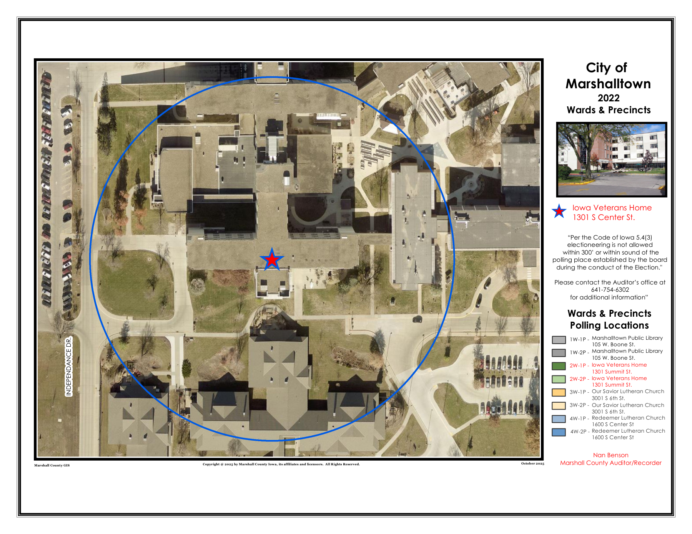
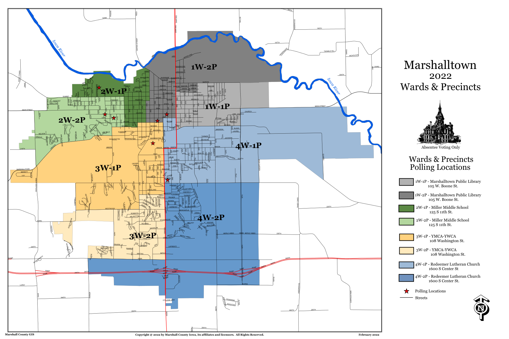
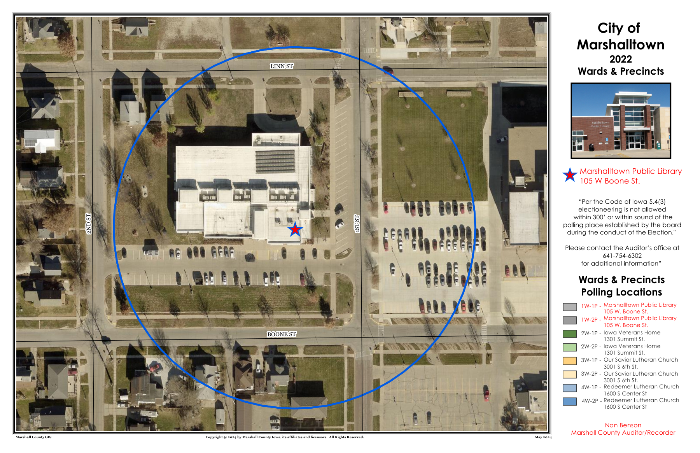
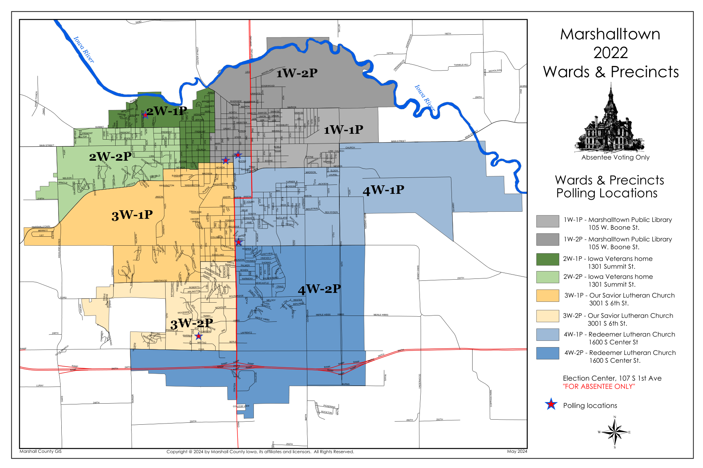
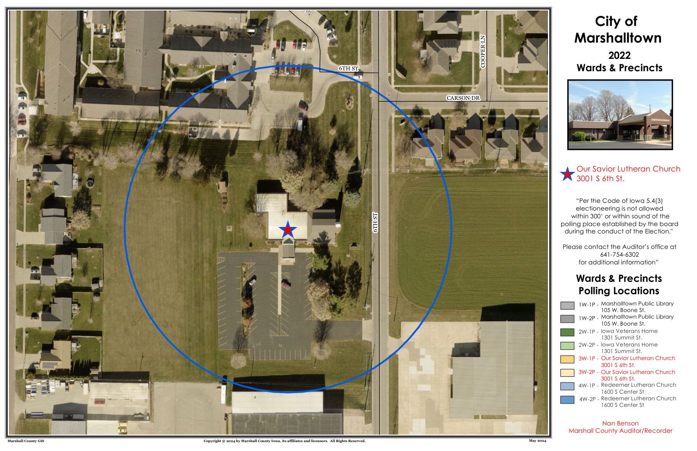
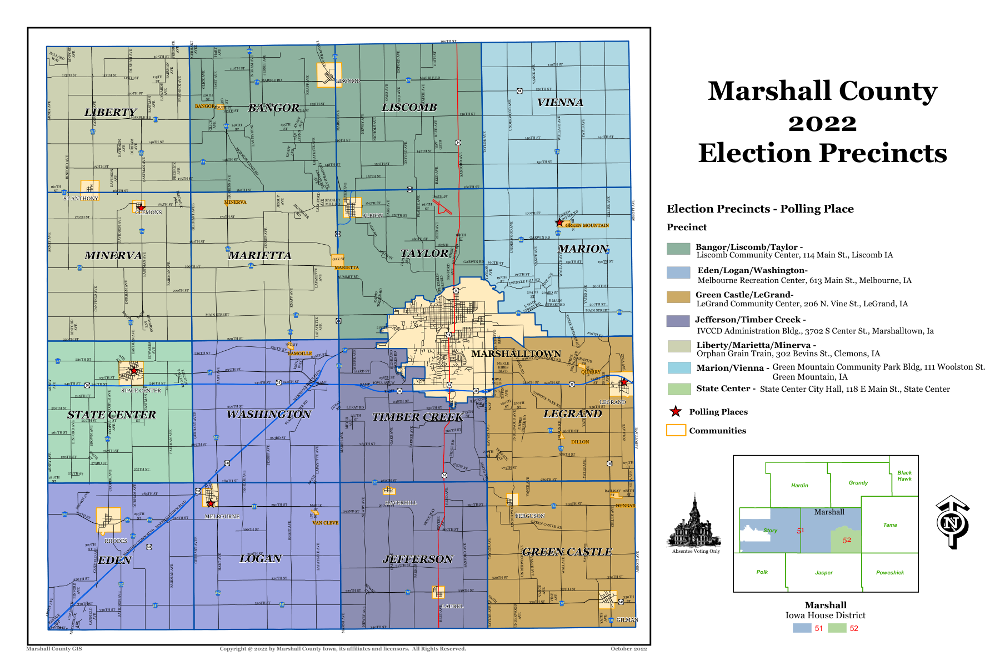
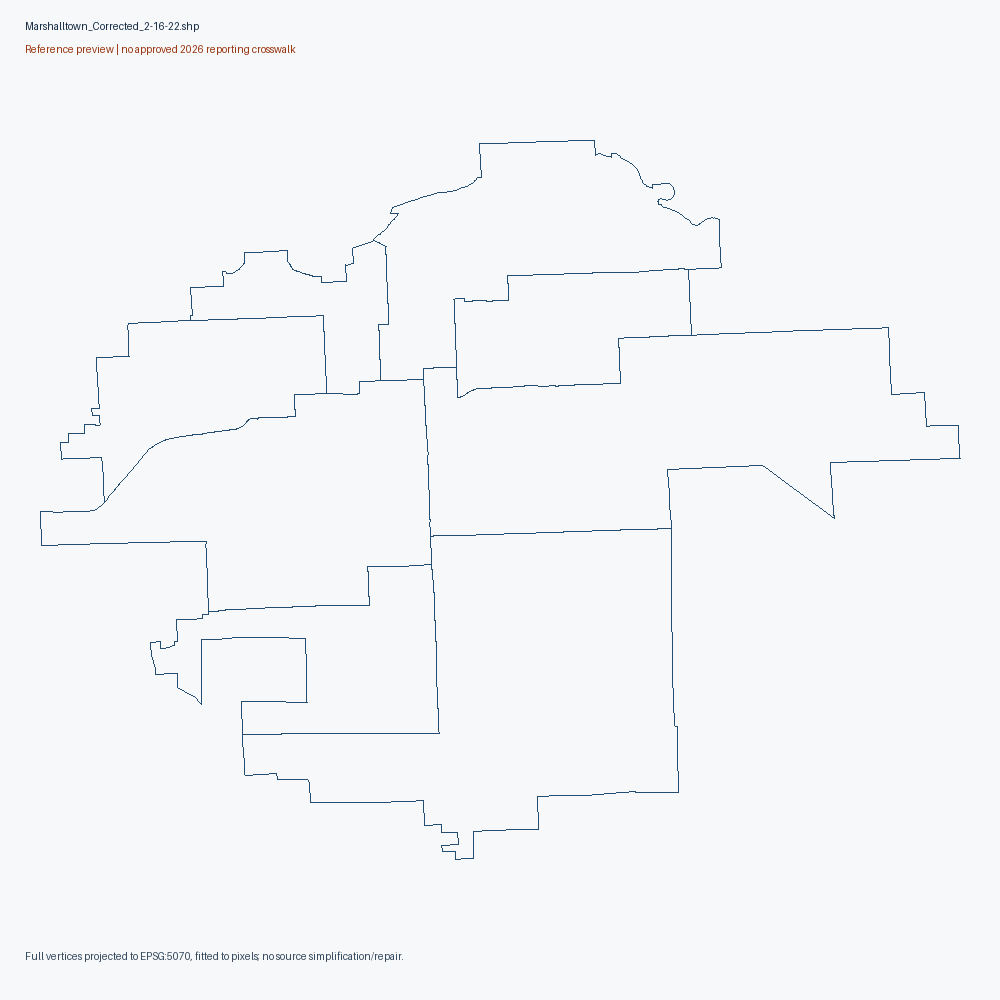
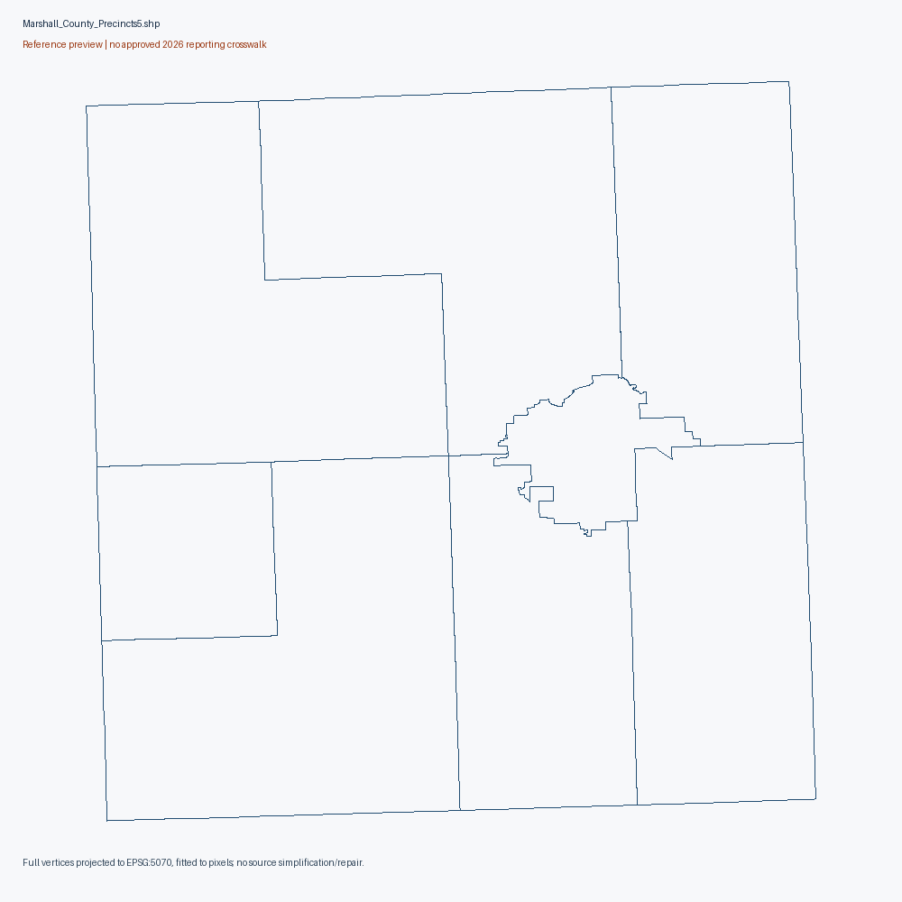

All counties
19. Marshall County
Reference maps. No approved November 2026 reporting-unit crosswalk.
Source-native units remain unlocated until documentary crosswalk; aggregate/unassigned city areas and partial city files retained separately.
Exact source-native diagnostics (gzip JSON)
Marshalltown City Ward 4 - 300 Foot Rule Map
excluded as precinct geometry; electioneering buffer scope
Original source download Primary sourcesource PDF text/metadata retained in pdf-audit.json; edit/retrieval date is not adoption date

All rendered PDF pages (1)
Contact sheet 1
Marshalltown City Ward 2 - 300 Foot Rule Map
excluded as precinct geometry; electioneering buffer scope
Original source download Primary sourcesource PDF text/metadata retained in pdf-audit.json; edit/retrieval date is not adoption date

All rendered PDF pages (1)
Contact sheet 1
Marshalltown Precincts and Wards (PDF)
actual map asset; extent/vintage must be read from map, no approved reporting crosswalk
Original source download Primary sourcesource PDF text/metadata retained in pdf-audit.json; edit/retrieval date is not adoption date

All rendered PDF pages (1)
Contact sheet 1
Marshalltown City Ward 1 - 300 Foot Rule Map
excluded as precinct geometry; electioneering buffer scope
Original source download Primary sourcesource PDF text/metadata retained in pdf-audit.json; edit/retrieval date is not adoption date

All rendered PDF pages (1)
Contact sheet 1
Marshalltown Precincts and Wards
actual map asset; extent/vintage must be read from map, no approved reporting crosswalk
Original source download Primary sourcesource PDF text/metadata retained in pdf-audit.json; edit/retrieval date is not adoption date

All rendered PDF pages (1)
Contact sheet 1
Marshalltown City Ward 3 - 300 Foot Rule Map
excluded as precinct geometry; electioneering buffer scope
Original source download Primary sourcesource PDF text/metadata retained in pdf-audit.json; edit/retrieval date is not adoption date

All rendered PDF pages (1)
Contact sheet 1
Marshall County Precincts
actual map asset; extent/vintage must be read from map, no approved reporting crosswalk
Original source download Primary sourcesource PDF text/metadata retained in pdf-audit.json; edit/retrieval date is not adoption date

All rendered PDF pages (1)
Contact sheet 1
Marshalltown Precinct Boundaries.zip
partial city reference, not countywide geometry
Original source download Primary sourcereprecincting-era SOS collection; source-specific legal effective date unknown
8 native records; 2296 vertices. Full native attributes/vertices

Marshall County Precinct Boundaries.zip
reference geometry; current 2026 equivalence unapproved
Original source download Primary source2021/2022 reprecincting-era source publication; individual adoption/effective date unverified
7 native records; 4213 vertices. Full native attributes/vertices

Historical source scopes
{
"2024/candidate_reporting_units": 11,
"2024/candidate_administrative_controls": 1,
"2024/registration_statistics_units": 15,
"2024/turnout_context_units": 11,
"2024/status_context_units": 11,
"2022/candidate_reporting_units": 15,
"2022/candidate_administrative_controls": 1,
"2022/registration_statistics_units": 15,
"2020/candidate_reporting_units": 19,
"2020/candidate_administrative_controls": 1,
"2020/registration_statistics_units": 19
}